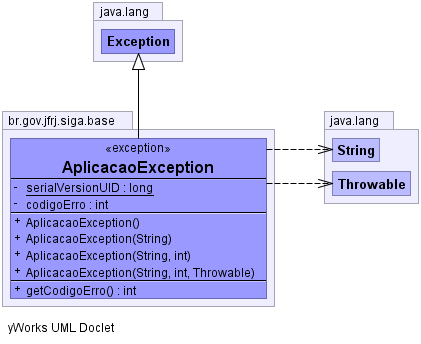

br.gov.jfrj.siga.base
Class AplicacaoException
java.lang.Object
 java.lang.Throwable
java.lang.Exception
br.gov.jfrj.siga.base.AplicacaoException
java.lang.Throwable
java.lang.Exception
br.gov.jfrj.siga.base.AplicacaoException
- All Implemented Interfaces:
- java.io.Serializable
public class AplicacaoException
- extends java.lang.Exception
- See Also:
- Serialized Form
-
-

|
Constructor Summary |
AplicacaoException()
Construtor padrão para a Classe |
AplicacaoException(java.lang.String message)
Construtor da Classe que atribui uma mensagem |
AplicacaoException(java.lang.String message,
int codigo)
Construtor da Classe que atribui uma mensagem e código de Identificação |
AplicacaoException(java.lang.String message,
int codigo,
java.lang.Throwable causa)
Construtor da Classe que atribui uma mensagem, um código de Identificação
e uma causa para a exceção |
| Methods inherited from class java.lang.Throwable |
fillInStackTrace, getCause, getLocalizedMessage, getMessage, getStackTrace, initCause, printStackTrace, printStackTrace, printStackTrace, setStackTrace, toString |
| Methods inherited from class java.lang.Object |
clone, equals, finalize, getClass, hashCode, notify, notifyAll, wait, wait, wait |
serialVersionUID
private static final long serialVersionUID
- See Also:
- Constant Field Values
codigoErro
private int codigoErro
AplicacaoException
public AplicacaoException()
- Construtor padrão para a Classe
AplicacaoException
public AplicacaoException(java.lang.String message)
- Construtor da Classe que atribui uma mensagem
- Parameters:
message - -
Descrição do motivo da exceção
AplicacaoException
public AplicacaoException(java.lang.String message,
int codigo)
- Construtor da Classe que atribui uma mensagem e código de Identificação
- Parameters:
message - -
Descrição do motivo da exceçãocodigo - -
Código de identificação da exceção para
AplicacaoException
public AplicacaoException(java.lang.String message,
int codigo,
java.lang.Throwable causa)
- Construtor da Classe que atribui uma mensagem, um código de Identificação
e uma causa para a exceção
- Parameters:
message - -
Descrição do motivo da exceçãocodigo - -
Código de identificação da exceção paracausa - -
Objeto da classe Throwable que gerou esta exceção
getCodigoErro
public int getCodigoErro()
- Returns:
- Retorna o atributo codigo.